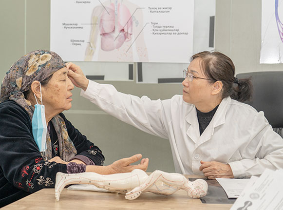

Услуги
Клиники «Guangzhou Medical» предлагают широкий спектр профессиональных медицинских услуг.

Ревматология - специализация внутренней медицины, которая занимается диагностикой и лечением ревматических заболеваний. Наши специалисты имеют большой опыт в лечении воспалительных и дегенеративно-дистрофических заболеваниях суставов и системных заболеваний соединительной ткани.
Запись на консультацию
Здравствуйте!
Чем я могу вам помочь?